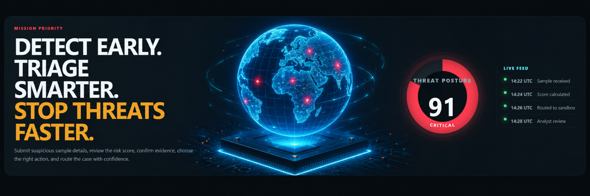

Upload a file and let SentinelQueue detect the details automatically.
The system reads safe static file details only: file name, type, size, browser MIME type, SHA-256 hash, magic bytes, first-seen time, and last modified date.
What happens here
Upload a real file.
SentinelQueue reads safe file details.
The file is scored for static risk indicators.
A sandbox routing record is created.
Current file record
File
No file selected yet
Type
Waiting for upload
Size
Waiting for upload
SHA-256
Waiting for upload
Status
Ready for file upload
Analysis
Review the risk score and the reason the file was flagged.
This page explains whether the file should be archived, monitored, routed to sandbox, or escalated.
Current risk score
--Waiting
Upload and scan a file to generate the analysis.
Risk reasons
Waiting for file scan
Sandbox
Automatic sandbox routing is active.
When a file is uploaded and scanned, SentinelQueue creates a simulated isolated sandbox routing record. This demo does not execute files.
Waiting for uploaded file
Upload and scan a file from the Command Center.
Sandbox routing record
File
No file selected
SHA-256
Waiting for upload
Environment
Simulated isolated Windows analysis VM
Network
Restricted demo network
Execution
Disabled for portfolio safety
Queue
Waiting
Result
No sandbox record yet
Plain English
The sandbox page shows that the file was safely routed for controlled analysis. In this portfolio version, the file is never executed. It only creates the operational routing record.
Evidence
Confirm the file record and chain of custody.
This page shows what was captured during upload and scan.
Evidence checklist
File name captured
File size captured
SHA-256 hash calculated
Magic bytes recorded
First-seen timestamp created
Sandbox route recorded
Current evidence file
File
No file selected yet
Type
Waiting for upload
Hash
Waiting for upload
Magic Bytes
Waiting for upload
Reports
Turn the triage decision into an executive SOC summary.
This report explains what file was scanned, what risk was found, and where it was routed.
Report summary
No uploaded file report yet. Upload and scan a file to generate a summary.
Export-ready sections
Executive summary
Risk score
Evidence record
Sandbox routing status
Analyst decision
Config
Control routing rules and review thresholds.
This page shows how a real SOC team would tune SentinelQueue.
Routing rules
Auto Sandbox Routing
Enabled
Critical Threshold
75+
Manual Review Threshold
50+
Monitor Threshold
25+
Archive Threshold
Below 25
Safe demo boundary
SentinelQueue reads local file details in the browser and simulates sandbox routing. It does not execute files, open macros, or detonate malware.

Total Samples4
Registered in queue
Critical2
Requires immediate review
Needs Review3
Analyst action required
Archived1
Passive monitoring
Evidence Quality96%
Chain of custody ready
Mean Time To Triage18m 42s
↓ 24% vs yesterday
1
Step 1: Upload File
Start here: enter sample details and submit.
2
Step 2: Review Risk Score
Next: review the score and why it looks risky.
3
Step 3: Check Evidence
Then: confirm where the sample came from and what was saved.
4
Step 4: Choose Action
Now choose what to do: monitor, archive, escalate, or sandbox.
5
Step 5: Route Or Escalate
Finish by assigning the next step and saving notes.
Step 1
Upload File
Start here. Upload a file. SentinelQueue will read the safe file details and score the risk.
Tip
Provide as much context as you can. It improves detection accuracy.
Step 2
Review Risk Score
Next, check the score. A higher score means the sample needs faster attention.
A higher score means higher risk. Review the top reasons above.
Step 3
Check Evidence
Then confirm where the sample came from and what evidence was saved.
File Evidence
Source
Waiting for upload
File Name
No file selected
Detected Type
Waiting for scan
Browser MIME
Waiting for scan
File Size
Waiting for scan
First Seen
Waiting for scan
Last Modified
Waiting for scan
Created
Browser upload cannot safely read this
SHA-256
Waiting for scan
Magic Bytes
Waiting for scan
Chain Of Custody
96% Complete
Evidence Items
Original FileSaved
Extracted MacrosSaved
Static Analysis ReportSaved
YARA Scan ResultsSaved
Tip
Make sure all evidence is saved and the chain of custody is complete.
Step 4
Choose Action
Now pick what happens next. Choose the safest action for the risk level.
Recommended Action
Immediate Analysis
High risk detected. Recommend further dynamic analysis.
Select Action
Tip
Choose the action that best matches the risk and context.
Step 5
Route Or Escalate
Finish by assigning the next owner, queue, deadline, and notes.
Tip
Clear notes and ownership help the team move faster.
How The Process Works
1Upload FileUpload a real file for safe static analysis.2Review Risk ScoreSee the score and the risk reasons.3Check EvidenceConfirm file details, hash, size, and timestamps.4Choose ActionChoose archive, monitor, sandbox, or escalate.5Route Or EscalateAssign an owner and save the decision.
“
SentinelQueue turns suspicious sample intake into a simple step-by-step workflow.
Analysts know exactly what to review, what evidence exists, and what to do next.
AR
Alex RodriguezThreat Intelligence Lead · Cloud Retail SOC